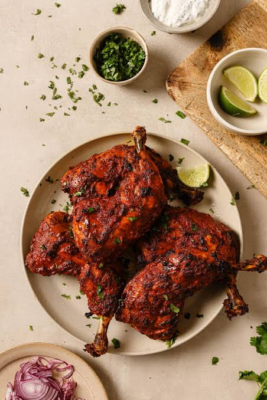
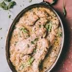

Our Signature Menu
Starters & Kababs
- Chicken Reshmi Kabab
- Juicy boneless chicken pieces marinated in fresh cream and mild spices. - ₹280
- Tandoori Chhicken
- blended with secret Handmade spices. - ₹350
- Creamy Chicken Malai
- Marinated with fresh cow malai and cream. - ₹300
Our Kitchen Gallery


About-us
Established in 1994, Grill Kabab Corner started as a boutique dining room and has grown into one of Kolkata’s most beloved culinary landmarks for authentic North Indian and Mughlai cuisine. For over three decades, our restaurant has been dedicated to preserving the rich heritage of traditional charcoal grilling, bringing the timeless flavors of sizzling skewers, aromatic spices, and perfectly charred meats straight to your table.
Whether you are stepping into our casual, welcoming dining room for a festive family dinner, grabbing a quick bite with friends after a long day, or ordering a late-night feast straight to your doorstep, we promise exceptional hospitality and generous portions at highly affordable prices. Grill Kabab Corner is not just a place to eat; it is a community gathering spot where multiple generations of food lovers have come together to share memories over incredible food. Stop by today and experience thirty years of grilling perfection in a warm restaurant atmosphere!
Booking-here
Contact-us
Address: 12, Grill Street, Kolkata
Phone: +91 90065 0000
Open: 12 PM - 11 PM